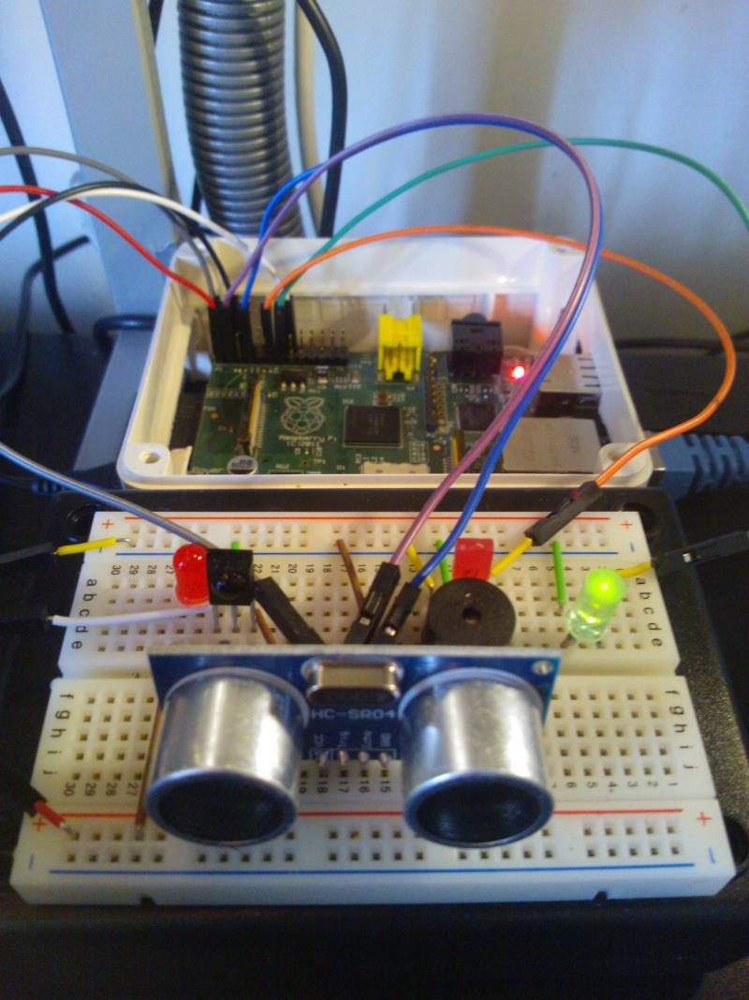

Playing with HG and RaspberryPi
Example project
Creating an IoT ready distance sensor with Raspberry Pi and HomeGenie
 One of the included programs in RaspberrySharp group is the "HCSR04 - Ultrasonic Ranging Module" program. This example require to be running on a Raspberry Pi and have a HCSR04 module wired to it.
{kind=link}
There are plenty of other things that can be connected to Raspberry Pi, and so, many possible applications:
HomeGenie is using Raspberry#-IO library for GPIO programming, turning Raspberry Pi into an integrated and ready to use Internet of Things development platform.
This is the Trigger Code of the example program:
// this Setup delegate will be executed once, when the program is enabled
Program.Setup(()=>
{
// set the widget that will display this program data (the distance).
// the builtin 'homegenie/generic/sensor' widget,
// will display all parameters starting with Sensor.*
Program.AddControlWidget("homegenie/generic/sensor");
// initialize program parameters
Program.Parameter("Sensor.Distance").Value = "";
Program.Parameter("Sensor.StatusMessage").Value = "";
// it makes program to respond to webservices calls:
// http:///api/EmbeddedSystems.Raspberry/HCSR04/Sensor.Distance
When.WebServiceCallReceived("EmbeddedSystems.Raspberry/HCSR04/Sensor.Distance", ( option ) =>
{
return "{ 'ResponseValue' : '" + Program.Parameter("Sensor.Distance").Value + "' }";
});
}); // end program setup
return true; // execute the 'Code to Run'
This, is the Code to Run:
// example code adapted from https://github.com/raspberry-sharp/
//
var triggerPin = ConnectorPin.P1Pin03.ToProcessor();
var echoPin = ConnectorPin.P1Pin07.ToProcessor();
using (var connection = new HcSr04Connection(triggerPin, echoPin))
{
while (Program.IsEnabled)
{
try
{
var distance = connection.GetDistance();
Program.Parameter("Sensor.Distance").Value = String.Format("{0:0.0}", (distance * 100));
Program.Parameter("Sensor.StatusMessage").Value = "OK";
}
catch
{
Program.Parameter("Sensor.Distance").Value = String.Format("{0:0.0}", (new Random().NextDouble() * 100));
Program.Parameter("Sensor.StatusMessage").Value = "Warning: HcSr04 Module Timeout. Reported value is randomly generated.";
// sleep some more if there was an error
Pause ( 4 );
}
Pause( 1 ); // 1 second interval between parameter updates
}
}
At line #7 of the Trigger Code we see the instruction Program.AddControlWidget("homegenie/generic/sensor"). This will make our program to show up in module list when adding a module to a group. So after adding it to a group, the widget Generic Sensor will display all program parameter starting with Sensor.* (and so, Sensor.Distance and Sensor.StatusMessage).
The following screenshot, show how the program appear in the Control menu:

With these few lines of code, we got the distance sensor program working, displaying values in the control menu and having also its own web service api. =)